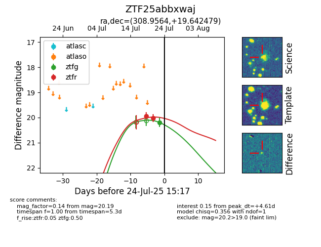

Target ZTF25abbxwaj at 2025-08-06 17:27, see:
FINK: fink-portal.org/ZTF25abbxwaj
Lasair: lasair-ztf.lsst.ac.uk/objects/ZTF25abbxwaj
ALeRCE: alerce.online/object/ZTF25abbxwaj
alt names
ZTF25abbxwaj (ztf,fink)
coordinates:
equatorial (ra, dec) = (308.9564,+19.64248)
galactic (l, b) = (62.9198,-12.44118)
photometry
last ztfg=20.22, ztfr=20.29
2 ztfg, 5 ztfr detections
